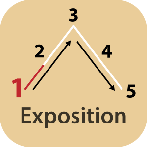
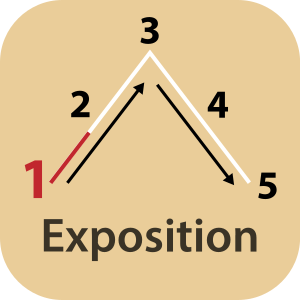

Exposition: Erster Akt in der Fünfakt- und der Dreiaktstruktur. Der Schauplatz der Handlung, die Ausgangssituation und Haupt- und wichtige Nebenfiguren werden eingeführt.
In der Dreiaktstruktur leitet der erste Plot Point, in der Fünfaktstruktur das erregende Moment in den nächsten Akt über.
 
